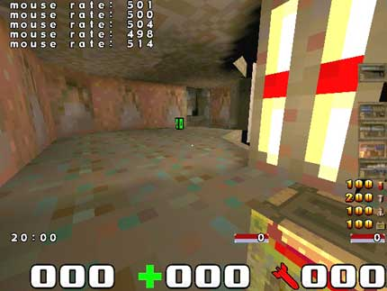

Changing USB mouserate
Tuesday 23rd May, 2006 | Skip to comments (0)
Set your USB mouserate above the default (125hz) with two simple steps! Once you have increased your rate you will never go back. It is possible to set it to as high as 1000hz but I recommend 500hz.
Step 1
Download the USB Mouserate Switcher.
Step 2
Locate the USB Mouserate Switcher, run it and click “Patch”. Follow the instructions and set the rate of your choice (250hz / 500hz / 1000hz).
Thats it!
Check your mouserate
Check your new mouserate using mouserate or in FuhQuake using /m_showrate "1" (you must have -m_smooth -dinput in your commandline). Then set your mouse rate by typing /m_rate 500.
